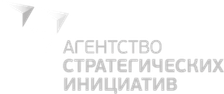

Ближайший форум · осень 2026
V Сибирский форум по промышленному туризму #ПРОМОТУРТОМСК–2026
23–24 ноября 2026 · Томск
Деловая программа: ОЭЗ ТВТ «Томск», г. Томск, пр. Развития, 3
Анонс · регистрация скоро откроется
Регистрация открыта
Форум идёт сейчас
Форум завершён · итоги и материалы
До начала форума · 23 ноября, 09:00 по Томску
—
—
—
—
Два дня о развитии промышленного туризма: экскурсии на предприятия Томска и Томской области, открытие и награждение, практический семинар, биржа субконтрактов, стратегическая сессия, круглый стол и семейный квиз.
6 экскурсионных маршрутов23 ноября · отправление от ТПП Томской области в 09:15